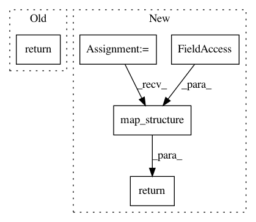

6426fc937946517f208e0b8525d7f85afb952cef,texar/modules/decoders/rnn_decoders.py,AttentionRNNDecoder,output_dtype,#AttentionRNNDecoder#,534
Before Change
// TODO(zhiting): fix it
@property
def output_dtype(self):
return AttentionRNNDecoderOutput(
logits=dtypes.float32,
sample_id=dtypes.int32,
cell_output=dtypes.float32,
attention_scores=dtypes.float32,
attention_context=dtypes.float32)
After Change
// containing the input_state"s first component"s dtype.
// Return that structure and the sample_ids_dtype from the helper.
dtype = nest.flatten(self._initial_state)[0].dtype
return AttentionRNNDecoderOutput(
logits=nest.map_structure(lambda _: dtype, self._rnn_output_size()),
sample_id=self._helper.sample_ids_dtype,
cell_output=nest.map_structure(
lambda _: dtype, self._cell.output_size),
attention_scores=nest.map_structure(
lambda _: dtype, self._cell.state_size.alignments),
attention_context=nest.map_structure(
lambda _: dtype, self._cell.state_size.attention))
In pattern: SUPERPATTERN
Frequency: 3
Non-data size: 5
Instances
Project Name: asyml/texar
Commit Name: 6426fc937946517f208e0b8525d7f85afb952cef
Time: 2018-01-26
Author: zhiting.hu@petuum.com
File Name: texar/modules/decoders/rnn_decoders.py
Class Name: AttentionRNNDecoder
Method Name: output_dtype
Project Name: ray-project/ray
Commit Name: 1775e89f262111791fabfd40f80a24f74738fe54
Time: 2020-04-28
Author: sven@anyscale.io
File Name: rllib/policy/policy.py
Class Name:
Method Name: clip_action
Project Name: asyml/texar
Commit Name: b41104d53d3fe1979029a4edea5dc9943dd4037a
Time: 2017-12-07
Author: zhiting.hu@petuum.com
File Name: texar/modules/decoders/rnn_decoders.py
Class Name: BasicRNNDecoder
Method Name: output_dtype